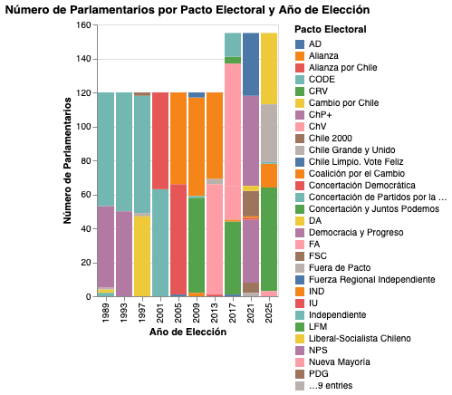
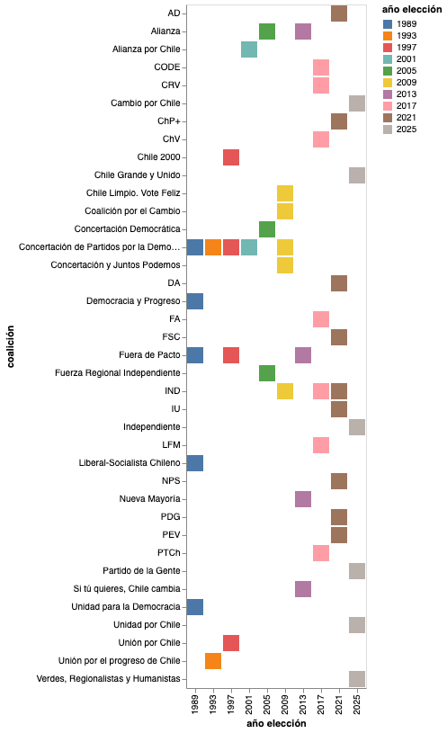

WEBSTORY · POLÍTICA CHILENA · 1989–2025
WEBSTORY · POLÍTICA CHILENA · 1989–2025
Desde el retorno a la democracia, la representación política en Chile ha experimentado profundas transformaciones. Lo que comenzó como un sistema dominado por dos grandes coaliciones evolucionó, tras la reforma electoral de 2017, hacia un Congreso con múltiples fuerzas políticas compitiendo por la representación ciudadana.
A finales de los años ochenta, con la caída del régimen militar de Augusto Pinochet, los actores políticos chilenos afrontaron una gran misión: reconstruir los partidos políticos y reorganizar las coaliciones que agruparían a estas fuerzas tras 17 años de dictadura.
En aquel escenario surgieron dos grandes bloques políticos que lideraron las elecciones parlamentarias de 1989.
Años de dictadura precedieron la reorganización de las fuerzas políticas actuales.
Por un lado, quienes fueron opositores al régimen se agruparon bajo la Concertación de Partidos por la Democracia. La coalición obtuvo 67 de los 120 escaños de la Cámara Baja en las primeras elecciones democráticas.
Su principal competidor fue Democracia y Progreso, conformado por Renovación Nacional y la UDI, que alcanzó 48 escaños.

Visual 1: El gráfico de barras muestra claramente el duopolio inicial y el quiebre abrupto de la proporcionalidad.
Durante las décadas de 1990 y 2000, ambas coaliciones dominaron el Congreso Nacional. En 1993 la Concertación aumentó su presencia a 70 escaños, dejando escaso espacio para fuerzas ajenas a estos dos grandes pactos.
La lógica bipartidista se mantuvo durante siete elecciones parlamentarias consecutivas, aunque con pequeñas excepciones como el pacto Chile 2000 o candidaturas independientes que lograron representación puntual.
Haz clic en cada año para explorar la evolución electoral:

Visual 2: Cronología de surgimiento, mutación y desaparición de coaliciones parlamentarias.
Distritos electorales
Diputadas y diputados
Pactos con representación
La implementación del sistema proporcional modificó la distribución del poder político dentro del Congreso. Por primera vez, siete pactos lograron representación significativa en la Cámara de Diputados.
En ese contexto, el Frente Amplio irrumpió en la política nacional obteniendo 20 escaños y alterando el equilibrio histórico de la izquierda chilena.
"El sistema binominal tendía a empatar las fuerzas; el nuevo sistema proporcional abrió la llave a la diversidad... y a la dispersión."
Presiona el botón para simular cómo se atomizó el poder en el hemiciclo a lo largo de las últimas décadas.
Desde entonces, ya no existen únicamente dos grandes coaliciones predominantes. Nuevas fuerzas como el Partido de la Gente o el Partido Social Cristiano han ingresado a la disputa parlamentaria, transformando la composición de la Cámara Baja.
La representación política es hoy más diversa, pero también más fragmentada. El equilibrio entre ambas dimensiones continúa siendo uno de los principales desafíos del sistema político chileno.